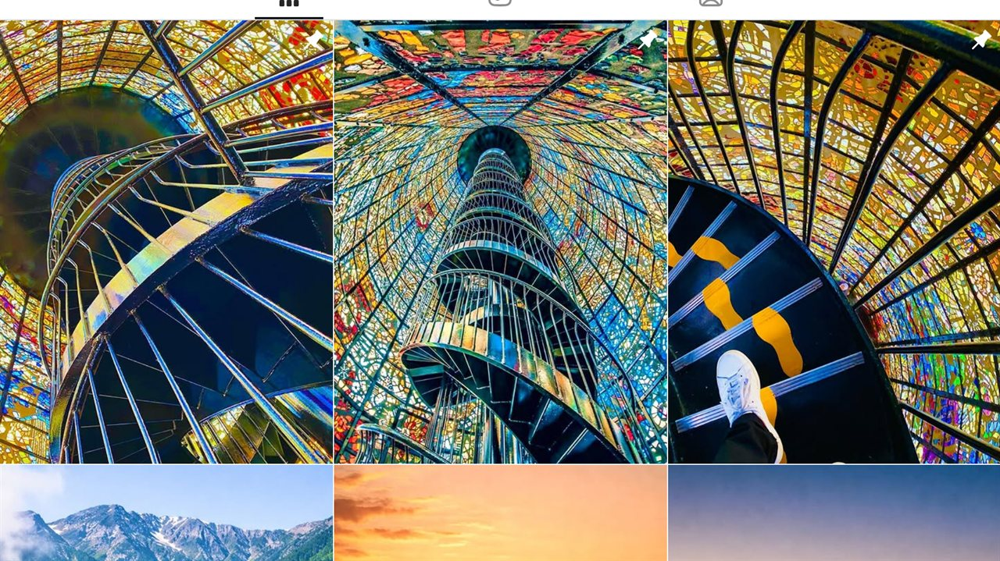

Beyond Work
仕事の外で、つくっているもの。
エンジニアの仕事から離れた場所でも、手を動かしてつくり続けています。写真、音楽、映像 — 3つの活動を紹介します。

写真 / Instagram
@nyagagram
GR で撮りためた写真を発信。専用の紹介サイトも自作しました。
RICOH GR をポケットに入れて、街の光と影、ふとした瞬間を切り取っています。撮影から現像、紹介サイトの制作まで、すべて自分の手で。
Instagram を開く ↗
AI 音楽・映像
Lofi Space
生成AIを使った Lofi の音楽・映像制作。健全なコンテンツのみを発信しています。
作曲も映像もサムネイルも、生成AIツールを組み合わせて一人で制作。ツールの選び方や品質の整え方は、仕事での AI 活用にもそのまま活きています。
チャンネルを開く ↗
YouTube
カードゲーム
カードゲームをテーマにした動画を制作・投稿しています。
企画から撮影・編集・配信まで一人で担当。ライブ配信やパック開封など、視聴者と一緒に楽しめる動画づくりを目指しています。
チャンネルを開く ↗